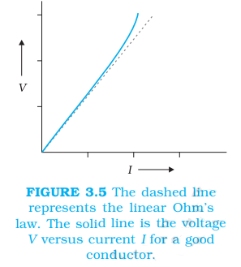
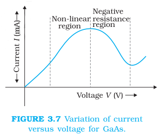

3.6 Limitaions Of Ohm's Law
Although Ohm’s law has been found valid over a large class
of materials, there do exist materials and devices used in
electric circuits where the proportionality of V and I does not hold. The deviations broadly are one or more of the following types:
(a) V ceases to be proportional to I (Fig. 3.5).

 (b) The relation between V and I depends on the sign of V. In other words, if I is the current for a certain V, then reversing the direction of V keeping its magnitude fixed, does not produce a current of the same magnitude as I in the opposite direction (Fig. 3.6). This happens, for example, in a diode which we will study
in Chapter 14.
(b) The relation between V and I depends on the sign of V. In other words, if I is the current for a certain V, then reversing the direction of V keeping its magnitude fixed, does not produce a current of the same magnitude as I in the opposite direction (Fig. 3.6). This happens, for example, in a diode which we will study
in Chapter 14.

(c) The relation between V and I is not unique, i.e., there is more than one value of V for the same current I (Fig. 3.7). A material exhibiting such behaviour is GaAs.
Materials and devices not obeying Ohm’s law in the form of Eq. (3.3)
are actually widely used in electronic circuits. In this and a few
subsequent chapters, however, we will study the electrical currents in
materials that obey Ohm’s law.